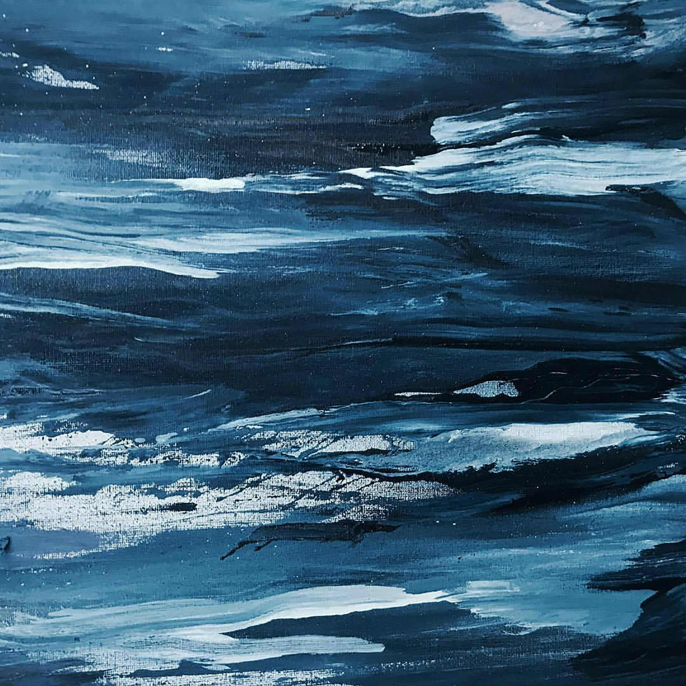

The blue sea waves gently in the night,
A blue face fades softly out of sight.
Blue feelings arise in the silence so deep,
A cold mist spreads forth in the unknown’s sweep.
A man far away, searching for meaning in thought,
Around him, blue dreams in the landscape lie caught.
Surrounded by shadows, he plunges down low,
A sunken body waves from the distance below.
